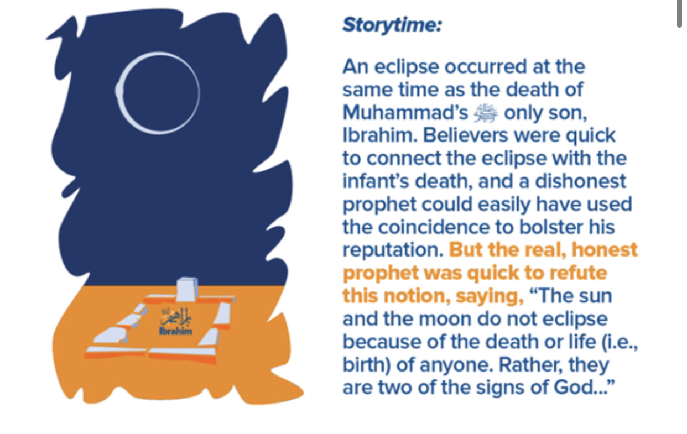
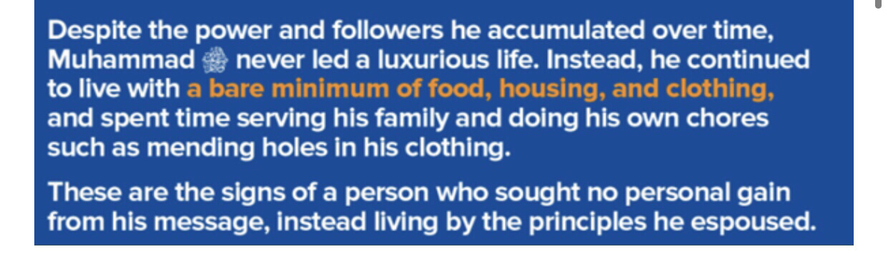
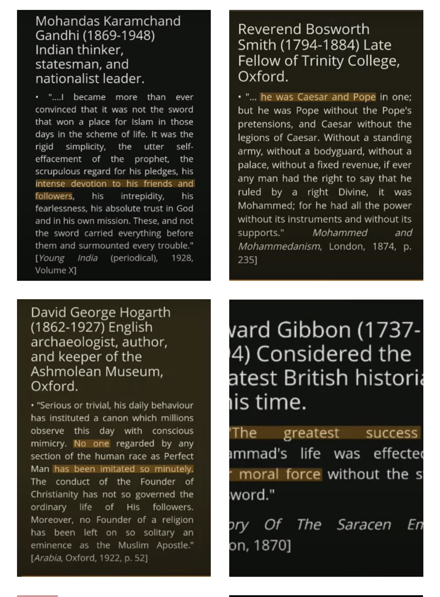
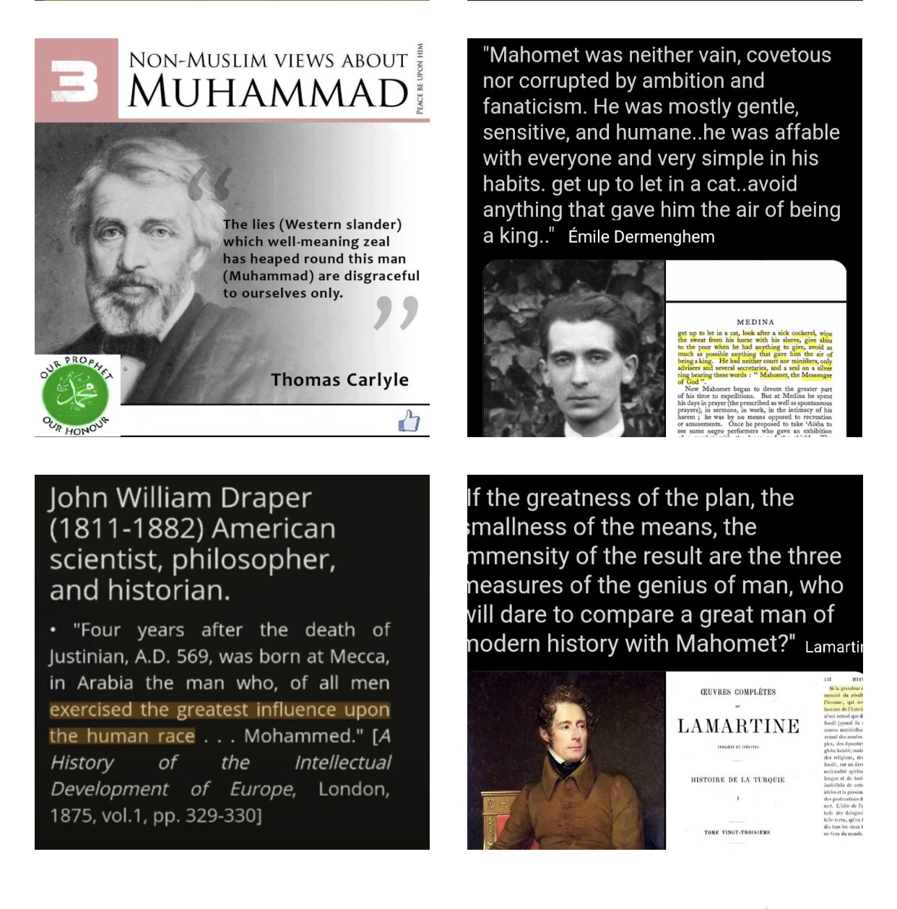
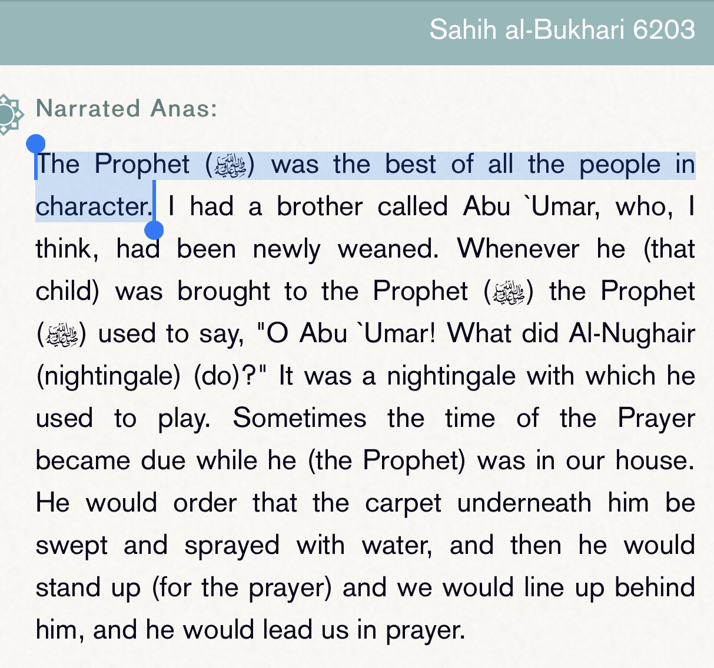
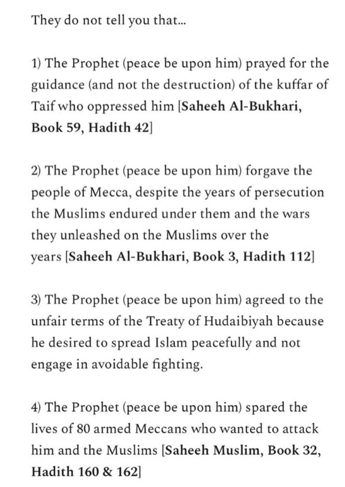
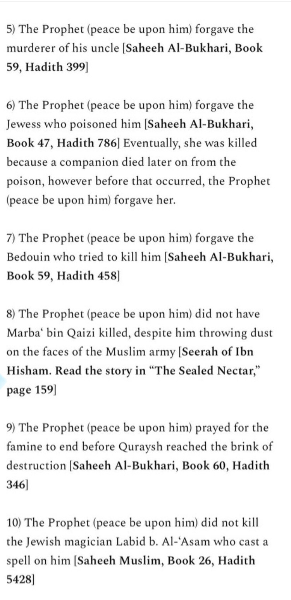
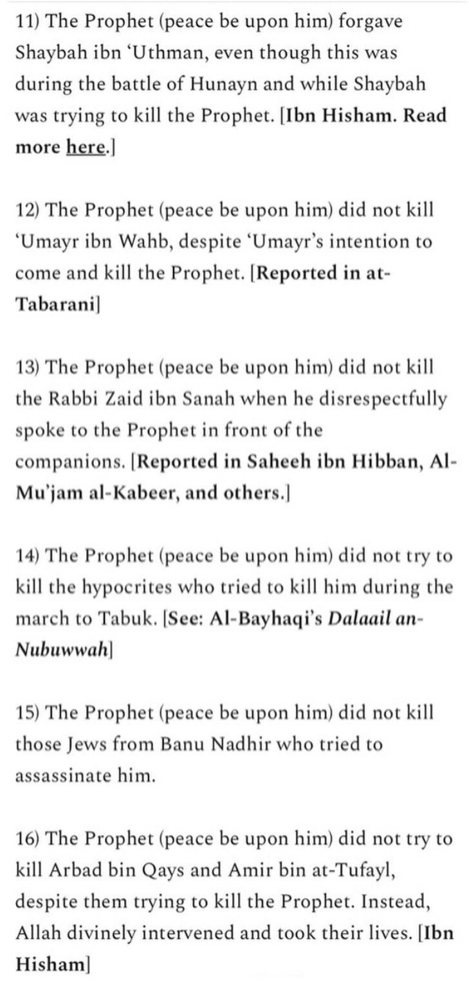
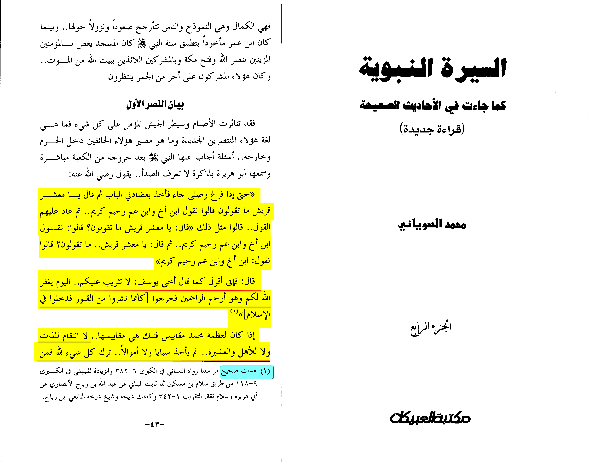
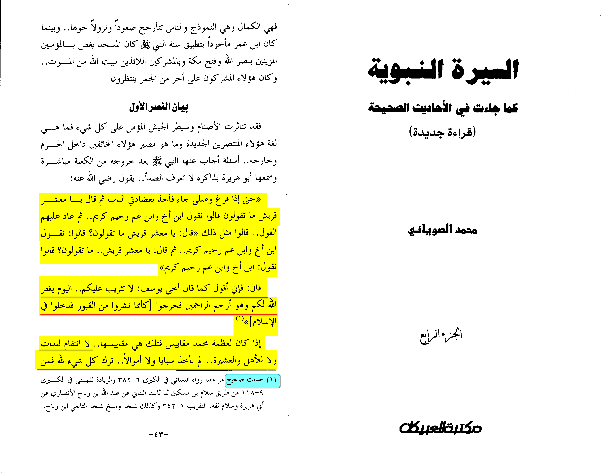

INTRODUCTION
In the Quran Allah says in Surah Ahzab ayah 21 (Chapter 33 verse 21)
“Indeed, in the Messenger of Allah you have an excellent example for whoever has hope in Allah and the Last Day, and remembers Allah often.”
I want to make this clear before people continue reading. Muhammad ﷺ did not preach in La La land where it was all rainbows and happiness. He preached in an environment filled
with bad people who treated him with hostility and verbal and physical abuse. They also tortured him and his followers. They betrayed his trust many times.
They broke their oaths attempted to assassinate him and did many more other horrible things. I mentioned this first as people often overlook this and ignore just how bad the environment
around Muhammad ﷺ was. Yet the way he responded and dealt with these people was amazing and no one else could do a better job. Fact.
The reason I mention is this is because many people attack Muhammad ﷺ. These people are not educated and they have a seal on their hearts. If you read the authentic sources regarding his
life and you are honest you too will realise just how great a man he was.
I won’t be going over everything in his life but I will provide you with resources where you can learn more at the end of this chapter for now let’s get into why he is the best man to walk this earth.
I have already established how he was truthful I want to expand on this some more as well his other traits
HIS CHARACTER
So, I am just going to go over a few of his characteristics.
He was honest and truthful
I have already mentioned this at the beginning. He never told a lie and his enemies even approved of this. He was called by the nickname “Al-Amin” (Arabic: الامين ), an Arab name meaning
“faithful, trustworthy” Also known as As-Sadiq. It makes no sense that he all of a sudden changed. Especially after we ruled out ulterior motives.
1. Simple man
If you read any biography on him you will see prior to his prophethood he was just a simple man. He lived a simple life he was well respected and humble. He was self-sufficient.
He was in a pagan environment and even before his prophethood he hated these idols he could not comprehend how people could swear by these idols.
2. Eclipse demonstrates his honesty

I have mentioned this before but think about this if he was an “impostor” he would have jumped at this opportunity but he didn’t.
3. Lack of material items
He was the Prophet of God yet he led a simple life even after his prophethood.

When people would dig trenches and build things he would help. [1] I have linked two videos for you where you can see this
4. He was brave and had tremendous perseverance

Legend
An objection to the argument that has been presented includes that there can be another option to explain the Prophet Muhammad’s ﷺ claim to prophethood.
This additional option is that the Prophet’s ﷺ claim is based on a legend or that he did not even exist. In other words, it has no basis in established history.
This objection maintains that the narratives and testimonies that underpin the life of the Prophet Muhammad ﷺ cannot be trusted or independently verified.
In essence, the proponent of this contention does not trust Islamic history.
The ‘legend’ objection is incoherent and exposes a lack of knowledge concerning how scholars ensured the historical integrity of the sources of the life
of the Prophet ﷺ. The Islamic approach to preserving history is based on two main elements: the isnaad, known as ‘the chain of narration’, and the matn,
meaning ‘the text or report’. There are robust criteria used to establish a sound chain of narration and a report. This is not the place to go into detail
about this Islamic science (referred to as ‘ilm ul-hadith in the Islamic intellectual tradition; the knowledge of narrations); however, a brief summary of
what it entails will be enough to demonstrate its robustness.
In order for the chain of narration to be authentic, many rational criteria for each narrator would have to be fulfilled. Some of these include:
The name, nickname, title, parentage and occupation of the narrator should be known.
The original narrator should have stated that he heard the narration directly from the Prophet ﷺ.
If a narrator referred his narration to another narrator, the two should have lived in the same period and have had the possibility of meeting each other.
At the time of hearing and transmitting the narration, the narrator should have been physically and mentally capable of understanding and remembering it.
The narrator should have been known as a pious and virtuous person.
The narrator should not have been accused of having lied, given false evidence or committed a crime.
The narrator should not have spoken against other reliable people.
In order for the text of the report to be accepted, a number of rational criteria must be fulfilled. Some of these include:
The text should have been stated in plain and simple language as this was the undisputed manner of speech of the Prophet Muhammad ﷺ.
A text which referred to actions that should have been commonly known and practised by others but were not known and practised, was rejected.
A text contrary to the basic teachings of the Qur’an was rejected.
A text inconsistent with well-known historical facts was rejected.
The teachings, character and impact of the Prophet ﷺ
The teachings of Muhammad ﷺ are not those of someone who is deluded or a liar. Amongst many of his teachings, he taught humanity about compassion, mercy,
humility, peace, love and how to benefit and serve others. The Prophet’s ﷺ character was one of perfection.
He reached the summit of virtues; he was compassionate, humble, tolerant, just and showed great humanity, forbearance and piety.
His guidance also had an unprecedented impact on the world. The Prophet’s ﷺ profound leadership and sublime teachings of
tolerance, justice, progress, freedom of belief and many other areas of life strongly indicate that he was not deluded; rather, he was a man of truth.
His teachings and character
The Prophet Muhammad’s ﷺ teachings and character are clear signs that he was a mercy to mankind and a noble human being given a Divinely inspired message
to take people out of darkness, into the light of truth. Below are selections of his teachings and examples of his sublime character.
I believe they speak for themselves. The more we study, reflect and ponder on the Prophetic wisdom, the more we will fall in love with and
appreciate who Muhammad ﷺ really was:
His teachings
Mercy and compassion
“The Merciful One shows mercy to those who are themselves merciful [to others]. So show mercy to whatever is on Earth,
then He who is in heaven will show mercy to you.”
“God is compassionate and loves compassion.”
“He is not of us who has no compassion for our young and does not honour our elderly.”
“May God have mercy on a man who is kind when he buys, when he sells, and when he asks for a payment.”
Contentment and spirituality
“Richness is not having many possessions. Rather, true richness is the richness of the soul.”
“Indeed, God does not look towards your bodies nor towards your appearances. But, He looks towards your hearts and your deeds.”
“Do not talk too much without remembrance of God. Indeed, excessive talking without remembrance of God hardens the heart. And indeed the furthest of
people from God are the harsh-hearted.”
“Be mindful of God, you will find Him before you. Get to know God in prosperity and He will know you in adversity. Know that what has passed you by was not
going to befall you; and that what has befallen you was not going to pass you by. And know that victory comes with patience, relief with affliction,
and ease with hardship.”
“Islam has been built on five [pillars]: testifying that there is no deity worthy of worship except God and that Muhammad is the Messenger of God,
establishing the prayer, paying the obligatory charity, making the pilgrimage to the House, and fasting in Ramadan.
“God, the Exalted, has said: ‘O son of Adam, I forgive you as long as you pray to Me and hope for My forgiveness, whatever sins you have committed.
O son of Adam, I do not care if your sins reach the height of the heaven; then you ask for my forgiveness, I would forgive you.
O son of Adam, if you come to Me with an Earth load of sins, and meet Me associating nothing with Me, I would match it with an Earth load of forgiveness.’”
“God says: ‘I am as My servant thinks I am [or: as he expects Me to be]. I am with him when he makes mention of Me. If he makes mention of Me to himself,
I make mention of him to Myself. And if he makes mention of Me in an assembly, I make mention of him in an assembly better than it.
And if he draws near to Me a hand’s span, I draw near to him an arm’s length. And if he draws near to Me an arm’s length, I draw near to him a fathom’s length.
And if he comes to Me walking, I go to him at speed.’”
Love
“By the one who has my soul in His hand, you will not enter the Garden until you believe, and you will not believe until you love one another.
Shall I point out to you something, which will make you love one another if you do it? Make the greeting of peace be widespread among you.”
“The servant of God does not reach the reality of faith until he loves for the people what he loves for himself of goodness.”
“Love for the people what you love for yourself and you will be a believer. Behave well with your neighbours and you will be a Muslim.”
“There have come to you the diseases of the nations before you: envy and hatred, and hatred is the razor. It shaves the religion and it does not shave hair.
By the one in whose hand is the soul of Muhammad, you will not believe until you love one another.
Shall I tell you something which, if you did it, you would love each other? Spread peace between yourselves.”
“None of you has faith until he loves for the people what he loves for himself.”
“When a man loves his brother he should tell him that he loves him.”
“Love for humanity what you love for yourself.”
“The best deed after belief in God is benevolent love towards people.”
Community and peace
The Prophet Muhammad ﷺ was asked: “What sort of deeds or traits of Islam are good?” The Messenger of God replied:
“To feed others, and to greet those whom you know and those whom you do not know.”
“He who makes peace between the people by inventing good information or saying good things is not a liar.”
“He who does not thank people, does not thank God.”
“By God, he does not [truly] believe! By God, he does not [truly] believe! By God, he does not [truly] believe!” Someone asked:
“Who, O Messenger of God?” He said: “He whose neighbour is not safe from his mischief.”
“All mankind is from Adam and Eve, an Arab has no superiority over a non-Arab nor a non-Arab has any superiority over an Arab;
also a white has no superiority over a black nor a black has any superiority over a white, except by piety and good action.”
“The believer is not he who eats his fill while his neighbour is hungry.”
Charity and humanitarianism
“God said: ‘Spend [i.e. on charity], O son of Adam, and I shall spend on you.’”
“Charity does not diminish wealth.”
“Visit the sick, feed the hungry and free the captives.”
“Make things easy, and do not make them difficult, and give good tidings and do not make people run away.”
“Give the labourer his wages before his sweat dries.”
“Every act of goodness is charity.”
Character and manners
“The believers who show the most perfect faith are those who have the best character, and the best of you are those who are best to their wives.”
“[God] has revealed to me that you should adopt humility so that no one oppresses another.”
“Neither nurse grudge nor sever [the ties of kinship], nor nurse enmity, and become as fellow brothers and servants of God.”
“He who truly believes in God and the last Day should speak good or keep silent.”
“The best among you is he who has the best manners.”
“Beware of suspicion, for suspicion is the worst of false tales.”
“The strong man is not the one who is strong in wrestling, but the one who controls himself in anger.”
Environment and animals
“If the Hour [the day of Resurrection] is about to be established and one of you is holding a palm shoot, let him take advantage of even one
second before the Hour is established to plant it.”
“If a Muslim plants a tree or sows seeds, and then a bird, or a person or an animal eats from it, it is regarded as a charitable gift (sadaqah) for him.”
“Removing harmful things from the road is an act of charity.”
The companions asked the Prophet Muhammad ﷺ, “O God’s Messenger! Is there a reward for us in serving the animals?” He replied:
“There is a reward for serving any living being.”
“Whoever kills a sparrow or anything bigger than that without a just cause, God will hold him accountable on the Day of Judgment.”
“A prostitute saw a dog lolling around a well on a hot day and hanging his tongue from thirst. She drew some water for it in her shoe, so God forgave her.”
Abdullah ibn Amr ibn al-Aas reported that the Prophet ﷺ passed one day by Sad ibn Abi Waqqas while he was performing wudoo’ (ritual ablution).
The Prophet ﷺ asked Sa’d, “Why this wastage?” Sa’d replied “Is there wastage in ritual ablution also?”
The Prophet ﷺ said, “Yes, even if you are at a flowing river.”
His character
The following testimonies and narrations describe some of the qualities of the character of the Prophet Muhammad ﷺ:
Forbearance, forgiveness and compassion
When the Prophet ﷺ had his tooth broken and his face cut during one of the battles when he was defending the Muslims and non-Muslims under his protection,
his companions asked him to curse the aggressors. However, he replied: “I was not sent to curse, but I was sent as a summoner and as a mercy.
O God, guide my people for they do not know.”
Anas ibn Malik said, “I served the Messenger of God ﷺ for ten years and he never said ‘Uff!’ to me. He did not say about anything I had done,
‘Why did you do it?’ nor about anything I had not done, ‘Why did you not do it?’”
Anas said, “I was with the Prophet ﷺ when he was wearing a thick cloak. A bedouin pulled him so violently by his cloak that the edge of the cloak made a mark
on the side of his neck. Then he said, ‘Muhammad! Let me load up these two camels of mine with the property of God you have in your possession!
You will not let me load up from your property or your father’s property.’ The Prophet ﷺ was silent and then he said, ‘Shall I take retaliation from you,
bedouin, for what you have done to me?’ He replied, ‘No.’ The Prophet ﷺ asked, ‘Why not?’ The bedouin replied, ‘Because you do not repay back a bad action
with a bad action.’ The Prophet ﷺ laughed and ordered that one camel be loaded up with barley and the other camel with dates.’”
Once a man demanding repayment for a debt seized hold of the Prophet Muhammad ﷺ and behaved very badly. The Prophet’s ﷺ companion was present and
chased him off and spoke harshly to him. However, the Prophet ﷺ said, “He and I needed something else from you. Command me to repay well and command
him to ask for his debt well.” The Prophet ﷺ repaid the loan and added more to it because his companion had alarmed him. The man, known as Zayd ibn Sa’na,
later became a Muslim. Zayd explains: “There were only two remaining signs of Prophethood which I had not yet recognised in Muhammad or noticed:
forbearance overcoming quick-temperedness and extreme ignorance only increasing him in forbearance. I tested him for these and I found him as described.”
Anas ibn Malik recalls the compassion of the Prophet Muhammad ﷺ towards children: “I never saw anyone who was more compassionate towards children than
God’s Messenger ﷺ.”
The Prophet’s ﷺ companions were killed and tortured; he himself was boycotted, starved and abused. There were many injustices and wrongs committed
against the Prophet ﷺ and his followers. However, when he peacefully took Mecca, known as the conquest of Mecca, he delivered a universal forgiveness and pardon.
He described the day as a day of “piety, faithfulness and loyalty.”
Appearance and approachability
The Prophet Muhammad’s ﷺ companions narrate about his appearance:
Abdullah ibn al-Harith said, “I did not see anyone who smiled more than the Messenger of God.”[71]
Al-Baraa’ ibn ‘Aazib narrated, “The Messenger of God ﷺ was the most handsome of all people, and had the best appearance.”
Jaabir ibn Samurah narrated, “I saw the Messenger of God ﷺ on a brightly moonlit night wearing a red garment.
Then I started looking at him and at the moon. And for me, he was more beautiful than the moon.”
Ali ibn Abi Talib narrated, “Those who saw him suddenly stood in awe of him and those who shared his acquaintanceship loved him.
Those who described him said they had never seen anyone like him before or since.”
Umm Ma’bad al-Khuza’iyah described to her husband what the Prophet ﷺ looked like: “He was innocently bright and had broad countenance.
His manners were fine. Neither his belly bulged out nor was his head deprived of hair. He had black attractive eyes finely arched by continuous eyebrows.
His hair glossy and black, inclined to curl, he wore long. He was extremely commanding. His head was large, well-formed and set on a slender neck.
His expression was pensive and contemplative, serene and sublime. The stranger was fascinated from the distance,
but no sooner he became intimate with him than this fascination was changed into attachment and respect.
His expression was very sweet and distinct. His speech was well set and free from the use of superfluous words, as if it were a rosary of beads.
His stature was neither too high nor too small to look repulsive… He was always surrounded by his Companions. Whenever he uttered something,
the listeners would hear him with rapt attention and whenever he issued any command, they vied with each other in carrying it out. He was a master and commander.
His utterances were marked by truth and sincerity, free from all kinds of falsehoods and lies.”
Humility and modesty
The Prophet Muhammad ﷺ said, “Do not exaggerate in praising me as the Christians praised the son of Mary, for I am only a servant.
So, call me the servant of God and His Messenger.”
The Prophet’s ﷺ wife, Aishah (may God be pleased with her) was asked, “What did God’s messenger do at home?”
She said, “He was like any other human being, cleaning and mending his garment, milking the goat, mending his shoes, serving himself,
and be of service to his family, till he hears the call to prayer, then he goes out [to pray in the mosque].”
The Prophet ﷺ showed humility when he said, “I am but a man like yourselves. I am prone to forget just as you are.”
When the Prophet ﷺ saw a man trembling with fear when he saw him, he said to him, “Relax, I am not a king; I am the son of a woman from Quraysh [an Arab people]
who would eat dried/jerked meat.”
The Prophet ﷺ would invoke his Lord saying, “O God, make me live humbly and make me die humbly, and gather me among the humble on the day of resurrection.”
Abu Sa‘eed al-Khudri said, “I saw the messenger of God ﷺ prostrating in mud and water so that I saw the marks of mud on his forehead.”
Anas said, “The Prophet ﷺ would be invited to eat barley bread and rancid fat and he would accept it.”
Aisha (may God be pleased with her) said, “At our home [that is, the home of the Prophet’s household], fire would not be kindled (sometimes)
for a whole month; we subsisted merely on water and dates.”
There are many other prophetic teachings and narrations relating to some of the actions of the Prophet Muhammad ﷺ that on the surface may seem harsh.
However, when someone takes the socio-political context and the existing moral variables into consideration, it will facilitate the conclusion that he was the most compassionate,
ethical and just human being. For example, the Prophet ﷺ was relentless in battle. One must understand that he was defending the community (that consisted of Muslims and non-Muslims)
and that battle was the final resort. This allows us to acknowledge and praise his bravery, valour and courage rather than attribute anything negative to him. This is not the place to
go into detail, however further study and research will substantiate the above points.[2]
NON – MUSLIMS ON MUHAMMAD ﷺ
Here are some non-Muslims who have commented on Muhammad ﷺ. I find Thomas Carlyle’s comments to be particularly compelling.



This are just a few people. I think I have provided you enough. Thomas Carlyle’s comments are very interesting because he condemns
the west who attack Muhammad ﷺ. He says that this is disgraceful to “ourselves only”
As promised, I said I would provide you with extra resources I STRONGLY recommend that you check the below out as it provides you with so much information
about him. It does not make sense for him to be anything but truthful considering he had to endure years of torture as well as the torture of his people.
How is this a proof of Islam?
You have a man called Muhammad ﷺ who even non-Muslims with no bias testify to how great a man he was. Muhammad ﷺ’s enemies even testified to
how good a man he was. Before he converted Abu Sufyan hated Muhammad ﷺ and he even testified in front of Emperor Heraclius that Muhammad ﷺ was truthful.
In the analysing his claim to Prophethood section. We looked at many objections and refuted them all. I have provided you with additional links throughout
and you can learn more about Muhammad ﷺ I even provided you with a book of Seerah and although short it tells you more about him.
When you analyse his character it simply does not make any sense that he was a liar or a false prophet. He was clearly truthful and had many outstanding
characteristics that even non-Muslims who hate the man have to concede are fantastic characteristics.



Al-Qasim ibn Salam reported: When his enemies came to the Ka’bah, they were holding onto its door and the Prophet,
peace and blessings be upon him, said, “What do you say? What do you think?” They said three times, “We say you are the son of our brother.”
The Prophet said, “I say to you as Joseph said to his brothers: No blame upon you today. Allah will forgive you, for he is the most merciful of the merciful.” (12:92)
In another narration, the Prophet said to them, “Go, you are free.”
Source: al-Sunan al-Kubrá 18275
Grade: Sahih (authentic) according to Al-Sawyani [Al-sirah Al-nabaweyah kama ja'at fi al-ahadith al-sahiha volume 4 page number 43]
 
